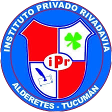

Tecnología
Informática, programación, robótica, inteligencia artificial y más.
Ver opciones →
ORIENTACIÓN PARA ESTUDIANTES
Explorá carreras, tecnicaturas, cursos y oficios. Descubrí diferentes caminos y empezá a pensar qué te gustaría hacer después de la secundaria.
No hay problema. Explorar también es parte de elegir.
EXPLORÁ
Conocé diferentes áreas y descubrí las opciones que existen dentro de cada una.
Informática, programación, robótica, inteligencia artificial y más.
Ver opciones →Medicina, enfermería, nutrición, kinesiología y otras áreas.
Ver opciones →Diseño gráfico, fotografía, música, audiovisual y más.
Ver opciones →Construcción, electrónica, mecánica, energía y tecnología.
Ver opciones →Derecho, comunicación, psicología, sociología y otras áreas.
Ver opciones →Administración, contabilidad, economía, marketing y negocios.
Ver opciones →Profesorados, educación inicial, primaria y otras especialidades.
Ver opciones →Electricidad, mecánica, carpintería, gastronomía y formación técnica.
Ver opciones →TU FUTURO
No tenés que tener toda tu vida decidida ahora. Lo importante es conocer tus posibilidades, buscar información y descubrir qué caminos existen.
Investigá carreras, tecnicaturas, cursos y oficios.
Descubrí qué se hace en cada profesión y dónde se puede trabajar.
Buscá información y consultá tus dudas antes de decidir.
ASISTENTE VIRTUAL
Preguntá sobre carreras, tecnicaturas, cursos, oficios y opciones de estudio.